Life at IITR
Campus Life (3/4)
(This blog was originally written on Oct 31, 2017. Any updates have been mentioned alongside the text as felt necessary)
Welcome back everyone!!
In this blog, first I will talk about the lectures and then move on to talk about the campus, sports, various
facilities, clubs and groups present in the institute. So, let’s begin!
Lectures ‐ All lectures in the first semester are delivered inside the new lecture hall complex. Every classroom
has projectors, speakers and mic, and overall they are well maintained. I must admit that the seats are so comfortable
and the atmosphere is such that it seems the best place in the world to take a quick nap (even if you don’t want to).
Some of the lectures in which the professor just comes to the class, shows us the slides and reads out whatever is
written in it are boring as hell, but some of them are really very interesting and you can clearly see the professor
putting in efforts to make you understand the concepts.
Facilities ‐ Talking about sports and other facilities, there is plenty of information available on the college website - iitr.ac.in,
so go and check it out! Overall, the campus is very green and beautiful. The environment is very peaceful and calm.
Every major sport and enough facilities are present, including an Olympic size swimming pool, a well-equipped gymnasium,
a temple, a church, two banks (SBI and PNB), grocery store, a mini hospital, etc.
 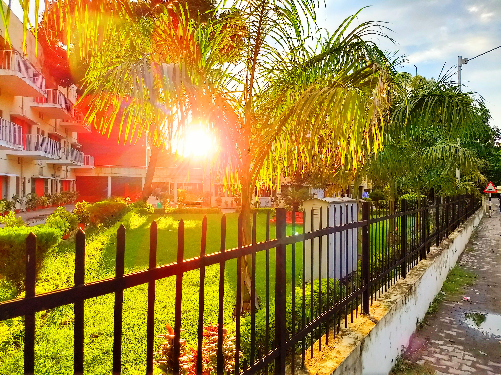
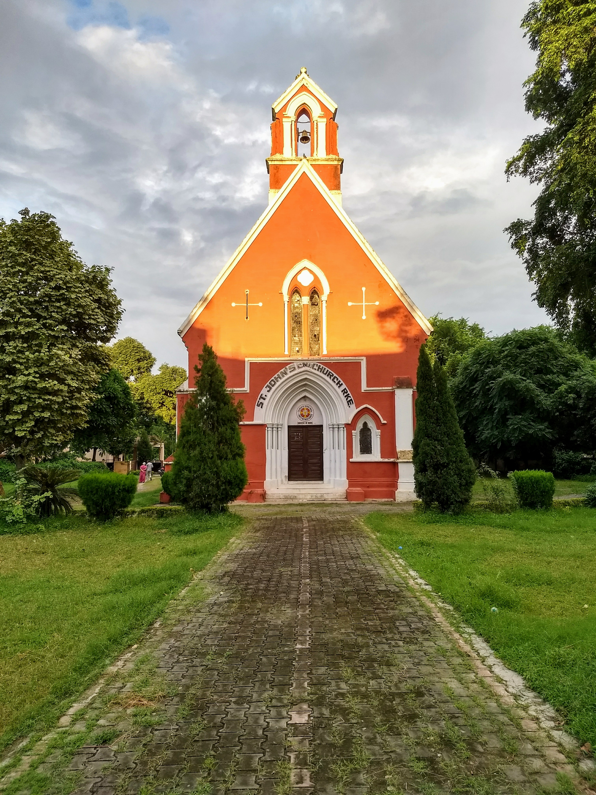
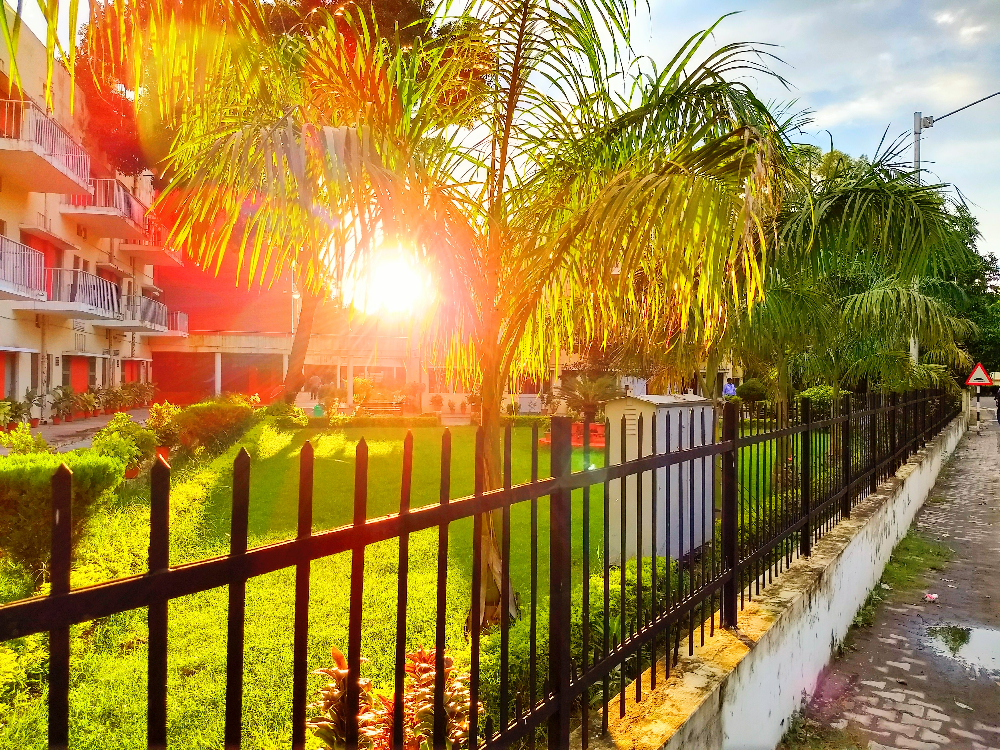
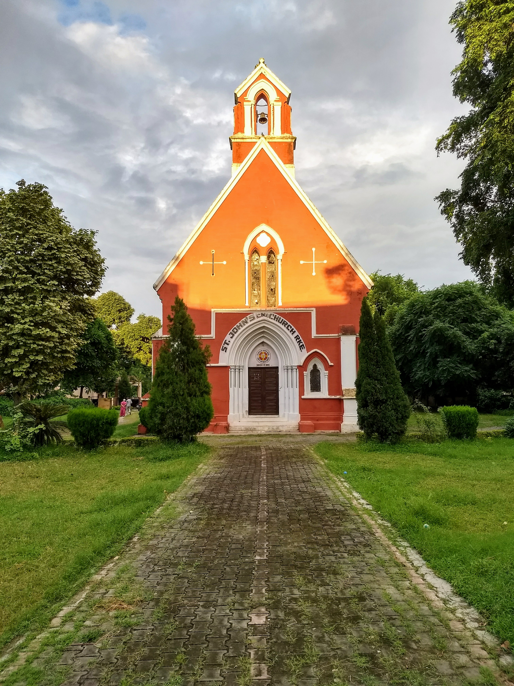

Moreover, just like any other IIT/well developed engineering college, IITR has well-equipped research labs and facilities.
What is probably unique about IITR is its Tinkering lab, which has state-of-the-art technologies/machines such as 3D
printing machines which will help you carry out your projects/bring innovative ideas to life more easily!
(update 2021 - can easily do without TBLS)
Extra‐curriculars ‐ There are various groups and clubs functioning in the campus, broadly speaking – technical, cultural and
some independent groups. Each group has its own legacy and overall there is plenty of opportunity for everyone to hone
their skills. Some groups are open, i.e., anyone can be a part of it and others recruit based on their own specific
criteria. (More on these groups in the next blog, so stay tuned!)
 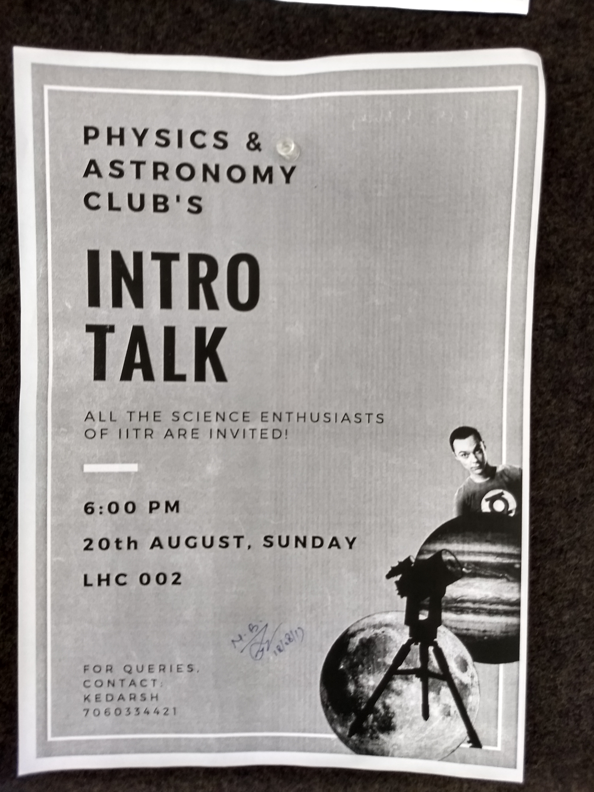
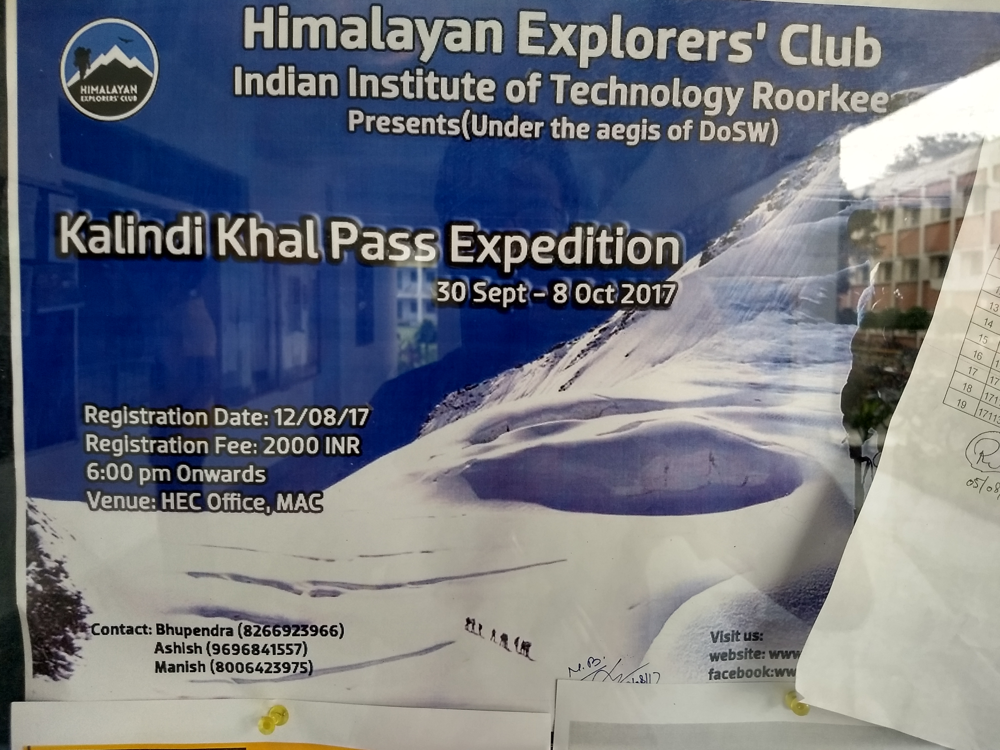
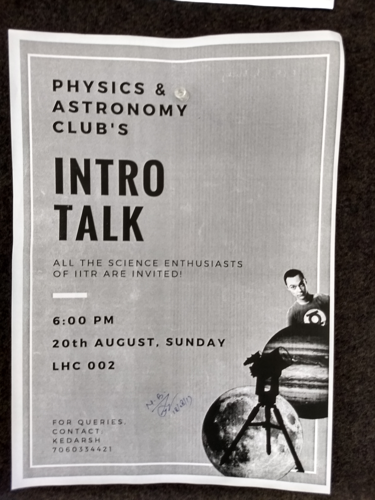
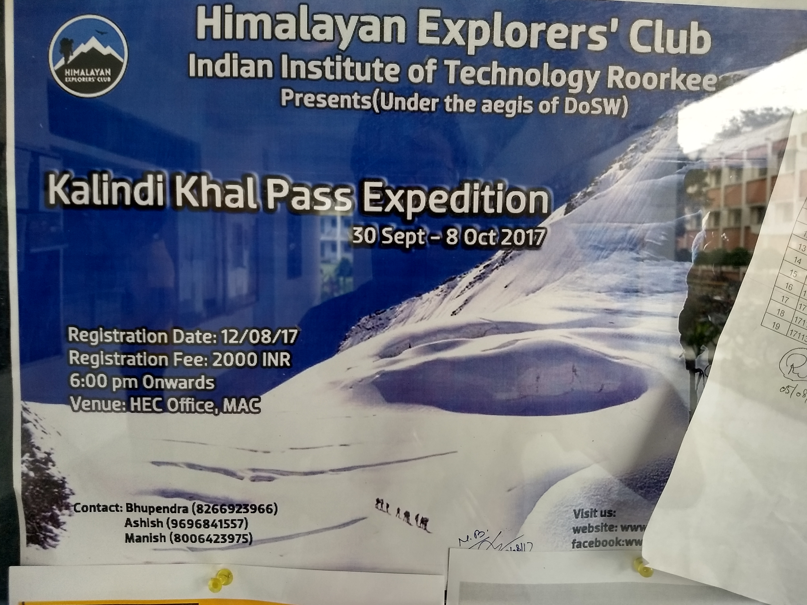
 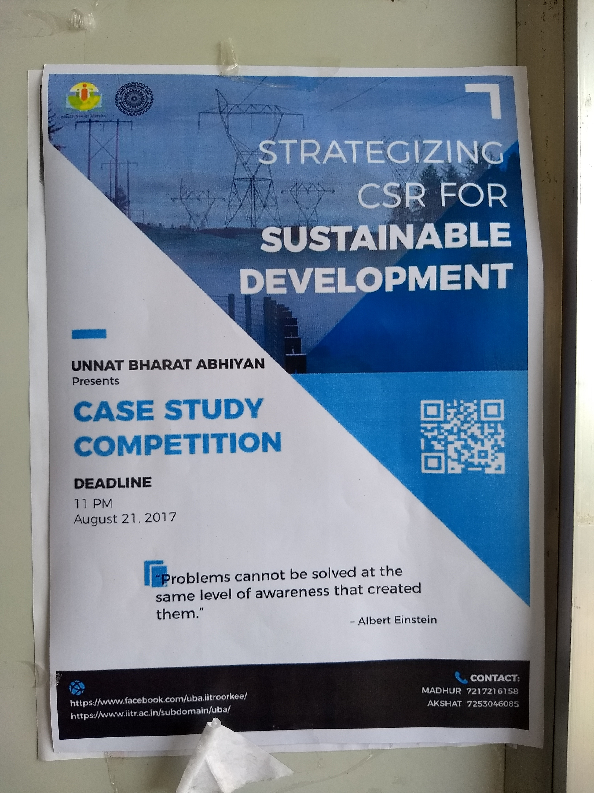
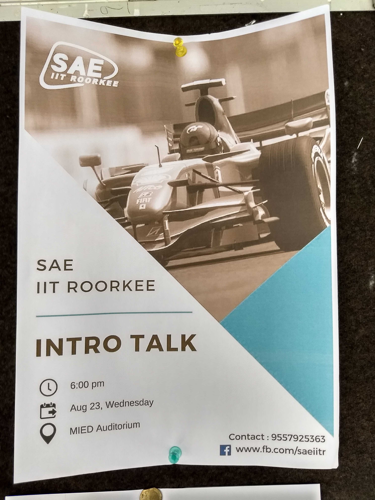
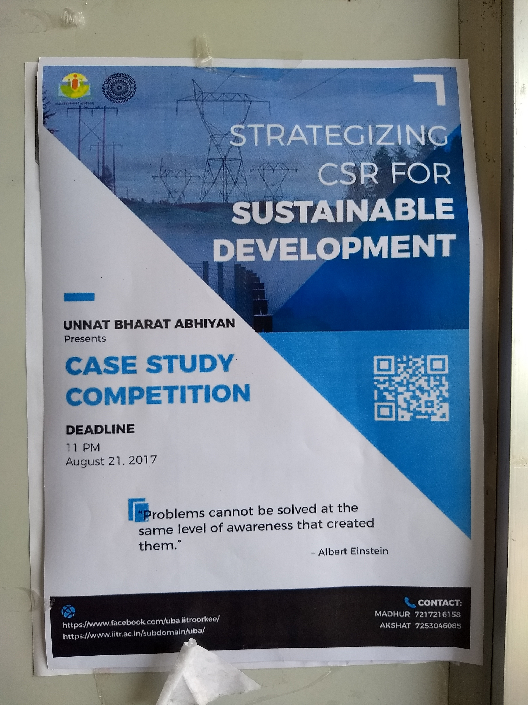
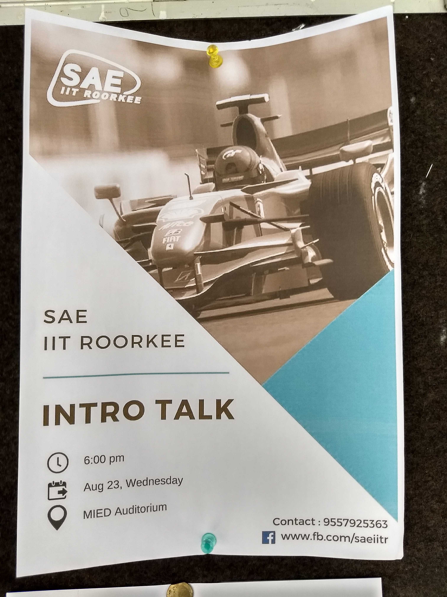
 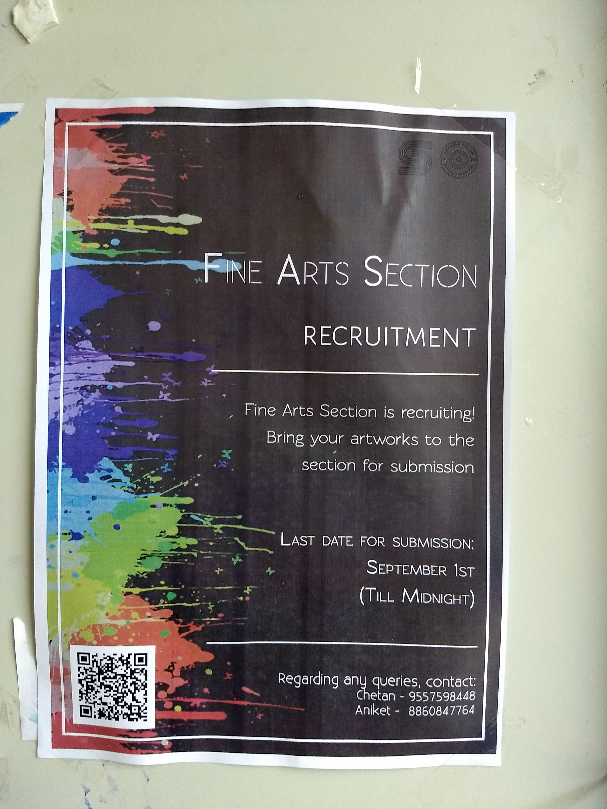
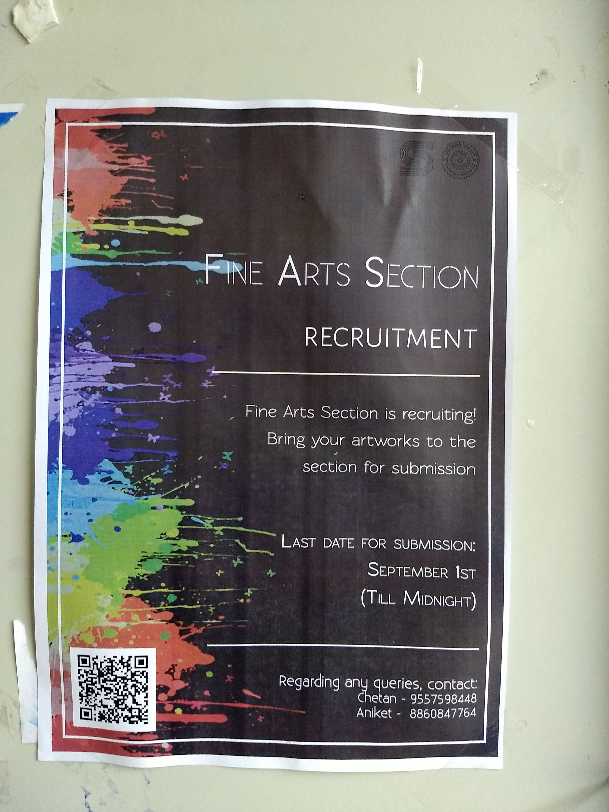


What’s not good about all these groups is that due to a large number of students having overlapping interests, some of them have to be disheartened as they might not get selected/become a part of the group which they really wish to be in. This is specially the case with boys, as there are already very few girls as compared to boys in the campus (the ratio almost being 1:10). The fact is that competition is more amongst boys than amongst girls (right now talking particularly about getting into various groups/societies). For example, consider the total number of girls to be 100 and that of boys to be around 800 in a particular year. From this number of girls and boys, filter out those who are interested (suppose 10% of the total students) in a particular skill, say basketball. Now, there are 80 boys competing to be selected as one of the 12 members of the team, whereas, on the other side, there are 10 girls competing against each other to be selected as one of the 12 members of the team. You can analyse the situation yourself (I apologize if I’ve hurt someone’s feelings, but I just wanted to bring this fact to light). However, this might be the case with any other IIT as well and not just IITR. Still, I would say, there is enough opportunity for everyone to pursue/do something of their own interest here at IITR.
Hence, on a positive note, I would like to end this blog here only. I hope you enjoyed reading it and got to know
a little bit more about IITRoorkee!
Have more questions? Feel free to comment below.
P.S. - Any fellow IITRoorkian reading this blog, please comment if you think I forgot to mention any valuable point or I said anything wrong and also feel free to share your thoughts and experiences with me so that I can improve the quality of my upcoming blog and perhaps reach a greater number of audience.